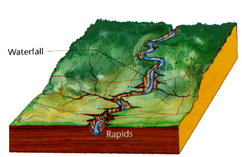
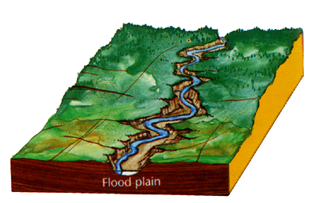
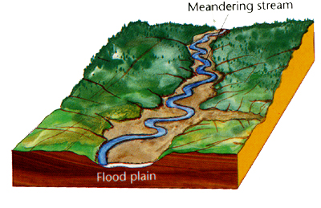
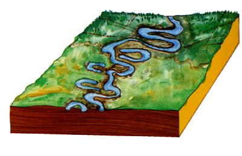

Geomorphic Cycle
- Describes how rivers shape the lithosphere into unique landforms.
- Rivers go through stages (Young, Mature, Old)
- This process can be reset through rejuvenation after and uplift of land by
tectonics.
- Young River: After a period of uplift, the land is dominated by tectonic
landforms
a) High Potential energy because of low base.
b) Rapid Flow in narrow, v-shaped valleys.
c) Waterfalls & Rapids.

Figure 29.5 (a) Youth - (Pg. 216, Earth Dynamics,
Chasmer)
- Maturity: River has cut down close to base level in the lower reaches.
a) High volume from upland regions.
b) Energy used to widen valley.
c) Meandering riverbed.
Figure 29.5 (b) Maturity - (Pg. 216, Earth
Dynamics, Chasmer)
- Late Maturity: Very wide, u-Shaped, valleys created by side cutting.
a) Flooding occurs in valley during high volume events (snow
melt or rainfall.)
b) Floodplain landforms.

Figure 29.5 (c) Late Maturity - (Pg. 216, Earth
Dynamics, Chasmer)
- Old Age: Tributaries begin to develop floodplains and meadows.
a) River deposits more sediment than it erodes.
b) Riverbed rises above flood plain and kept in by levees.
c) Silt and sand in water.
d) Delta building into ocean.

Figure 29.5 (d) Old Age - (Pg. 216, Earth
Dynamics, Chasmer)
|
|